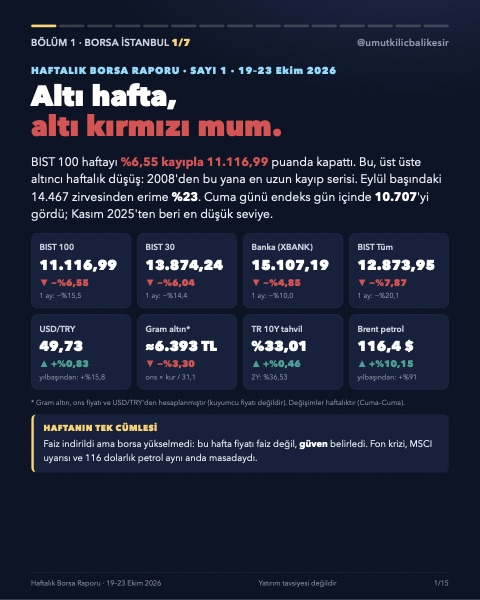
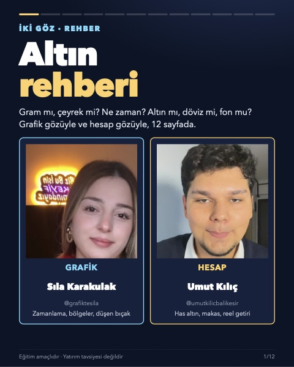

HAFTALIK BORSA RAPORU YENİ
Altı hafta, altı kırmızı mum
19–23 Ekim 2026 haftası: BIST 100, banka, kur, altın, tahvil ve petrol tek raporda. Haftanın tek cümlesi ve grafikler.
PDF'i açVideoların sonunda bahsettiğim PDF'lerin hepsi burada. En yenisi en üstte; kayıt ya da üyelik yok.

19–23 Ekim 2026 haftası: BIST 100, banka, kur, altın, tahvil ve petrol tek raporda. Haftanın tek cümlesi ve grafikler.
PDF'i aç
Gram mı, çeyrek mi? Ne zaman alınır? Altın mı, döviz mi, fon mu? Grafik gözüyle ve hesap gözüyle.
PDF'i aç
Bir şirketin finansal tablolarını okumak için grafikli ve şemalı görsel not kitabı: bilanço, gelir tablosu, nakit akışı, oranlar.
PDF'i aç
BORSA HARİTASI serisinin görsel not kitabı: hisse seçimi, trend, destek-direnç, RSI ve hacim, şemalarla.
PDF'i açKendi paranla mevduatın ve borsanın reel getirisini karşılaştıracağın hesap tablosu.
BIST hisseleri için yazdığım 3 açık kaynak Pine Script göstergesi. Kopyala-yapıştır, 1 dakikada kurulur.